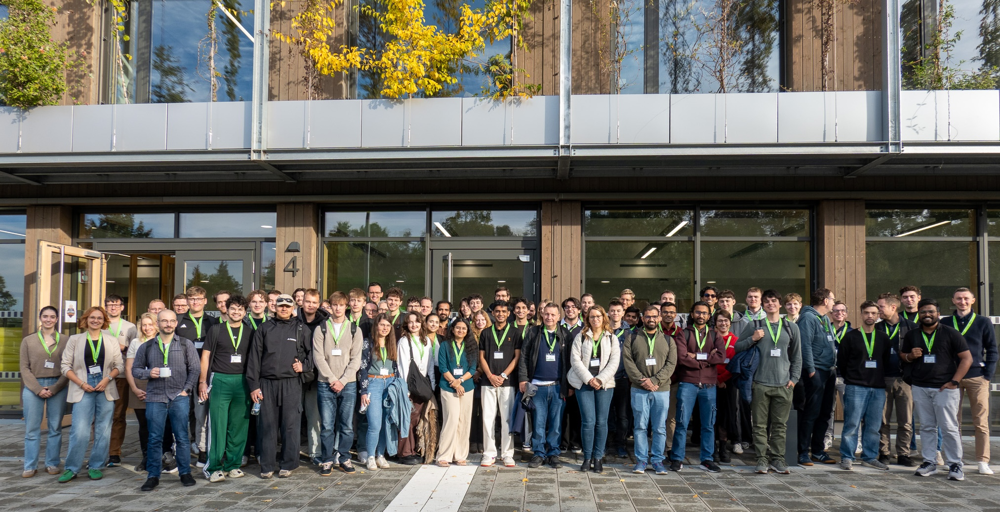

Our new preprint On the Power of Determinism in Multi-Item Auctions is available on arXiv and under review at STOC 2027.
About
I am a research associate and doctoral candidate at the Analytics & Optimization Lab at the University of Technology Nuremberg (UTN), advised by Alexander Martin and Yiannis Giannakopoulos.
My research lies at the intersection of discrete optimization and algorithmic game theory, with a focus on optimal auction design.
I earned my bachelor’s and master’s degrees in Mathematics and Economics at FAU Erlangen-Nürnberg. In my master’s thesis, I worked on pricing schemes for market equilibrium problems with integrality constraints.
I am UTN’s ambassador to the Franconian Data Science League, which brings together teams from companies and academic institutions for one-day hackathons. I also conduct the EHC Bubenreuth choir.
News
The TRR-154 book Mathematical Modelling, Simulation and Optimization using the Example of Gas Networks is out. I am a co-author of two chapters.
UTN hosted the latest Franconian Data Science League matchday, for which I was the lead organiser.
Publications
On the Power of Determinism in Multi-Item Auctions
Preprint, 2026. Under review at STOC 2027.
Models for Gas Markets
In Mathematical Modelling, Simulation and Optimization using the Example of Gas Networks, pp. 195–215. Springer, 2027.
Gas2Hydro – A Combined Natural Gas–Hydrogen Instance
In Mathematical Modelling, Simulation and Optimization using the Example of Gas Networks, pp. 483–500. Springer, 2027.
Discrete Single-Parameter Optimal Auction Design
ACM Transactions on Economics and Computation, 14(3), Article 11, pp. 1–31, 2026.
Franconian Data Science League
The Franconian Data Science League brings together teams from companies and academic institutions for one-day hackathons. Hosts set real-world data science challenges with a defined evaluation metric, so results are judged on solution quality rather than a pitch. I represent UTN as its league ambassador.
I was the lead organiser of the latest matchday, hosted at UTN’s Cube One in October 2026. Teams tackled the “String Fingerprints” challenge with live submissions and leaderboards keeping the competition open until the final minutes. Ultimately, DATEV won the matchday; the league’s matchday reports give an impression of the event.

Teaching
Introduction to Mathematical Data Analysis
Teaching assistant · Friedrich-Alexander-Universität Erlangen-Nürnberg
Mathematics for Data Science and Physics Students
Teaching assistant · Friedrich-Alexander-Universität Erlangen-Nürnberg
Music
Alongside my research, music is a great passion of mine. Since 2024, I have conducted EHC Bubenreuth, a mixed choir of around 35 singers. We rehearse and perform classical and contemporary repertoire, with highlights including joint performances with the Sinfonisches Orchester Bubenreuth.
I also enjoy playing the piano and occasionally composing. I have contributed several pieces for productions by Musicalprojekt86. The piece below, which is called “Rainfall”, is an original composition of mine. The remix and effects that bring it to life — and account for most of the work — are by LeetVibez.
Contact
University of Technology Nuremberg
Analytics & Optimization Lab
Nordostpark 93, 90411 Nuremberg, Germany